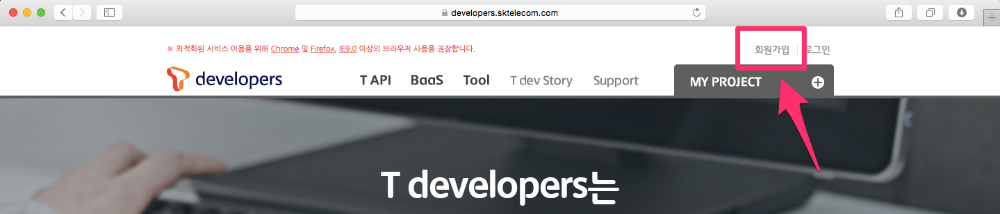
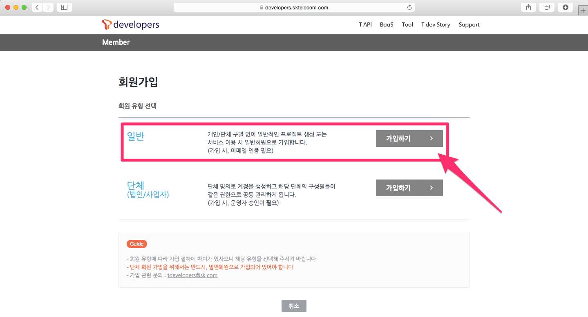
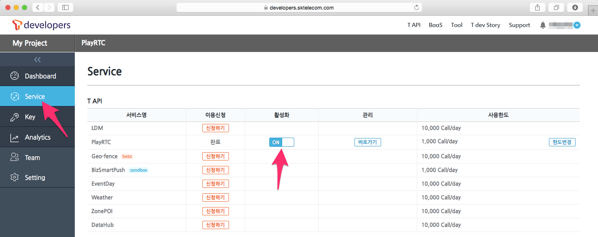

Project Key
PlayRTC 서비스를 사용하려면 T Developers에 가입하고 프로젝트를 생성하여 프로젝트 키를 받아야 합니다.
- 한국어 사용자는 아래의 안내에 따라 T Developers에 가입하여 프로젝트 키를 발급받으면 됩니다.
- 다국어 사용자는 playrtc@sk.com으로 연락 주세요.
Sandbox Key
첫 사용시 간단한 테스트를 위해서 아래의 공개된 Sandbox 키를 제공합니다.
- 60ba608a-e228-4530-8711-fa38004719c1
하지만 이 키는 보안과 서비스 환경을 보장하지 않으며 경우에 따라 작동을 안할 수 있으니 간단 테스트 용도이외에는 아래의 절차에 따라 직접 사용할 키를 발급받으셔야 합니다.
T Developers
T Developers(https://developers.sktelecom.com)는 SK Telecom의 다양한 API를 통합 지원하는 개발자를 위한 공간으로, PlayRTC를 포함한 많은 서비스의 운영과 사용 계약 관련 정보 등을 제공하며 또한 관리하고 있으며 아래의 기능을 제공 합니다.
- PlayRTC 서비스 인증을 위한 Project Key 발급
- PlayRTC 서비스 사용, 차단 등 API 제어
- PlayRTC 서비스 운영 시 발생하는 API 트래픽 모니터링 및 로그, 통계 확인
- PlayRTC 기반의 서비스를 운영 중에 발생하는 각종 모니터링 및 로그, 통계 관련 기능
- PlayRTC 서비스 사용 계약과 관련된 문의 사항 및 계약 사항 처리
T Developers에 대한 자세한 소개 및 추가적으로 제공 받을 수 있는 SK Telecom 서비스 등은 T Developers 서비스가이드에서 확인하고 이곳에서는 간단하게 회원 가입, Project Key 획득 및 활성화 방법 만 살펴보도록 하겠습니다.
T Developers 회원 가입
SK Telecom 개발자 포털인 T Developers에 접속, 개발자 회원 가입을 선택하고 절차에 따라 회원 가입을 합니다.

이 때 일반적인 경우는 일반 사용자를 선택하면 됩니다. 법인 사업자는 대규모 사용과 계정관리를 필요로 하는 사업자를 위한 가입 절차이며 이 방식의 가입을 원하면 T Developers의 안내에 따르면 됩니다.

간단한 메일 인증을 통해 가입이 완료 됩니다.
프로젝트 추가하기
회원 가입 완료 후 Login 합니다.
My Project > 신규 프로젝트 추가를 선택하고, 프로젝트 이름과 설명을 작성합니다. 프로젝트 이름은 Application명 으로 사용하면, 구분과 이해가 쉽습니다.

PlayRTC 사용 신청
이제 등록한 프로젝트가 My Project에 나타납니다. 목록에서 방금 생성한 프로젝트 이름을 선택하고 왼쪽의 Service탭을 선택하고 PlayRTC를 신청합니다.

이로써 사용신청이 완료되었습니다.
PlayRTC 프로젝트 키 발급받기
Key탭을 선택하고 키생성을 선택합니다.

이 때, Server Key와 Browser Key를 만들 수 있습니다. 서버키는 IP로 접속 제한을 걸때 사용하며, 브라우저키는 URL 주소로 접속 제한을 걸때 사용하면 됩니다. 접속 제한을 이 필요 없으면 둘 중 하나를 선택한 후 모든 IP 허용혹은 모든 도메인 허용을 선택하면 됩니다. 단 이 설정은 브라우저 SDK를 사용할 시 HTML 페이지에 표시되어 쉽게 외부로 노출되니 아래의 접속 제한하기를 꼭 설정하여야 합니다.
이제 키가 생성되는데 60ba608a-e228-4530-8711-fa38004719c1와 같은 UUID 형태로 이 키를 PlayRTC Javascript/Android/iOS SDK에 삽입하여 사용하면 됩니다.
프로젝트 키를 통해 접속 제한 설정하기
내 서비스가 10.0.0.10이나 awsomechat.com으로 호스팅 되고 있다면, 보안상 다른 IP인 20.20.20.20이나 다른 URL인 phishing.your.service.com의 API 호출을 제한할 필요가 있습니다. 이 때 IP 허용은 Server Key로, URL 허용은 Browser Key로 허용하고 싶은 IP나 URL을 입력하면 됩니다. 특히 브라우저 SDK를 사용할 시 HTML 페이지에 키가 표시되어 쉽게 외부로 노출되니 필수적으로 설정을 하여야 합니다.

PlayRTC 활성화 하기
다시한번 Service탭을 보면 이용신청은 완료가 되어 있으며, 활성화 스위치는 off상태 입니다. 이를 on으로 변경하면 사용이 가능 합니다.

이제 신청자의 격리된 환경에서 PlayRTC의 모든 사용 준비가 끝났습니다.
T Developers 기타 기능
T Developers에서는 프로젝트 키 관리 이외에도 사용량 관리, 로그등 다양한 기능을 제공하고 있습니다.
자세한 T Developers 회원 가입 및 프로젝트 생성 그리고 추가적으로 제공 받을 수 있는 SK Telecom 서비스 등은 T Developers 서비스가이드에서 확인이 가능합니다.